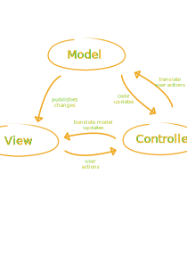

Objectives for Today
By the end of today, you will...
- Identify the MVC pattern.
- Define the role of the model, view, and controller in MVC.
- Describe how the MVC pattern is implemented in JavaFX applications.
What is MVC?
The Model-View-Controller pattern describes a way to break up GUI applications to better encapsulate graphical code.
In MVC, classes belong to one of three categories:
- Model - These classes hold business logic unrelated to GUIs.
- View - These classes represent actual GUI controls that display to the user.
- Controller - These classes implement the logic that connects the model and view.
What is MVC?
What is MVC?
In MVC, the Controller acts as an intermediary between the view and the model.
During initialization, the controller subscribes to events on both sides, and forwards updates to the other representation.
However, once this setup occurs, the view and model are often directly linked.
Why MVC?
The major benefit of MVC is the separation of business logic code and rendering code.
Model classes don't need anything like "toTextbox()" or "asGridRow()" methods -- those transformations are part of the controller.
View classes don't have to know how to handle any type of data ever written (that data will be transformed by the controller.)
Note: this means the controller is doing a lot!
MVC in JavaFX
MVC is the main paradigm implemented by many UI libraries like JavaFX.
The view is implemented with UI Control classes like Button, Textbox, Label, and TableView, usually via a declarative layout file.
The model classes are provided by the user as Plain Old Java Objects.
The Controller is specified in the view's FXML, and overrides/subscribes to events on the view and the model.